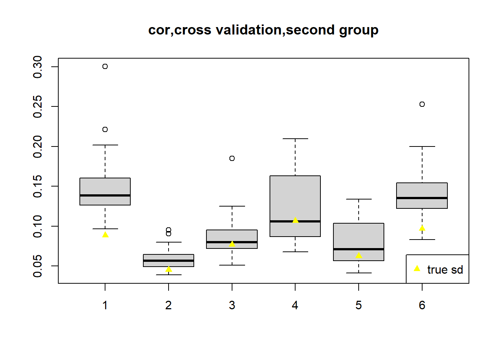

Last updated: 2021-08-26
Checks: 7 0
Knit directory: deconference/
This reproducible R Markdown analysis was created with workflowr (version 1.6.2). The Checks tab describes the reproducibility checks that were applied when the results were created. The Past versions tab lists the development history.
Great! Since the R Markdown file has been committed to the Git repository, you know the exact version of the code that produced these results.
Great job! The global environment was empty. Objects defined in the global environment can affect the analysis in your R Markdown file in unknown ways. For reproduciblity it’s best to always run the code in an empty environment.
The command set.seed(20200403) was run prior to running the code in the R Markdown file. Setting a seed ensures that any results that rely on randomness, e.g. subsampling or permutations, are reproducible.
Great job! Recording the operating system, R version, and package versions is critical for reproducibility.
Nice! There were no cached chunks for this analysis, so you can be confident that you successfully produced the results during this run.
Great job! Using relative paths to the files within your workflowr project makes it easier to run your code on other machines.
Great! You are using Git for version control. Tracking code development and connecting the code version to the results is critical for reproducibility.
The results in this page were generated with repository version be8f2b8. See the Past versions tab to see a history of the changes made to the R Markdown and HTML files.
Note that you need to be careful to ensure that all relevant files for the analysis have been committed to Git prior to generating the results (you can use wflow_publish or wflow_git_commit). workflowr only checks the R Markdown file, but you know if there are other scripts or data files that it depends on. Below is the status of the Git repository when the results were generated:
Ignored files:
Ignored: .Rhistory
Ignored: .Rproj.user/
Untracked files:
Untracked: analysis/consider_gamma_the_scaling_factor.Rmd
Untracked: analysis/manuscript_simulation_remove_outlier.Rmd
Untracked: data/day30.h5
Untracked: data/day30.h5.zip
Untracked: data/neuron/
Untracked: data/pancreas/
Untracked: output/check_coverage_weight_neuron/
Untracked: output/check_coverage_weight_xin/
Untracked: output/geneCor_DABulk_cpm.rds
Untracked: output/geneCor_Epen1Bulk_cpm.rds
Untracked: output/geneCor_FPPBulk_cpm.rds
Untracked: output/geneCor_P_FPPBulk_cpm.rds
Untracked: output/geneCor_SertBulk_cpm.rds
Untracked: output/geneCor_U_NeurBulk_cpm.rds
Untracked: output/geneCor_gtexpancreas_tpm.rds
Untracked: output/geneCor_neuronBulk_cpm.rds
Untracked: output/manuscript/
Untracked: output/neuron/
Untracked: output/simu_correlation_betahat_d500_neuron.rds
Untracked: output/simu_correlation_checkavariance_betahat_d500_xin_est_cor_100bulkforcor_alpha05_addjack.rds
Untracked: output/simu_correlation_checkavariance_betahat_d500_xin_hc3.rds
Untracked: output/simu_correlation_checkavariance_betahat_d500_xin_hc3_only_pos_ecov.rds
Untracked: output/simu_correlation_checkavariance_betahat_d500_xin_jack.rds
Untracked: output/simu_correlation_checkavariance_betahat_d500_xin_trueb.rds
Untracked: output/simu_correlation_checkavariance_betahat_d50_xin_est_cor_100bulkforcor_alpha01.rds
Untracked: output/simu_correlation_checkavariance_betahat_d50_xin_est_cor_100bulkforcor_alpha05.rds
Untracked: output/simu_correlation_checkavariance_betahat_d50_xin_est_cor_100bulkforcor_alpha05_addjack.rds
Untracked: output/simu_correlation_checkavariance_betahat_d50_xin_est_cor_100bulkforcor_alpha05_addjack_weighted.rds
Untracked: output/simu_correlation_checkavariance_betahat_d50_xin_est_cor_100bulkforcor_thresh.rds
Untracked: output/simu_correlation_checkavariance_betahat_d50_xin_est_cor_100indi.rds
Untracked: output/simu_correlation_checkavariance_betahat_d50_xin_est_cor_100indi_alpha03.rds
Untracked: output/simu_correlation_checkavariance_betahat_d50_xin_est_cor_10indi.rds
Untracked: output/simu_correlation_checkavariance_betahat_d50_xin_est_cor_10indi_alpha03.rds
Untracked: renv.lock
Untracked: renv/
Unstaged changes:
Modified: .Rprofile
Modified: analysis/simu_correlation_checkvariance_real.Rmd
Modified: analysis/simu_correlation_est_cor.Rmd
Modified: code/deconference_estfunc.R
Modified: code/simulation/get_cor_pairs.R
Modified: code/simulation/neuron/get_cor_pairs_neuron.R
Note that any generated files, e.g. HTML, png, CSS, etc., are not included in this status report because it is ok for generated content to have uncommitted changes.
These are the previous versions of the repository in which changes were made to the R Markdown (analysis/check_coverage_adding_weights_neuron_real_permute.Rmd) and HTML (docs/check_coverage_adding_weights_neuron_real_permute.html) files. If you’ve configured a remote Git repository (see ?wflow_git_remote), click on the hyperlinks in the table below to view the files as they were in that past version.
| File | Version | Author | Date | Message |
|---|---|---|---|---|
| Rmd | be8f2b8 | DongyueXie | 2021-08-26 | wflow_publish(“analysis/check_coverage_adding_weights_neuron_real_permute.Rmd”) |
Completely remove correlations.
indis_ref = readRDS('data/neuron/indis_ref_12400by6by97.rds')
rmse = function(x,y){sqrt(mean((x-y)^2))}source('code/deconference_main.R')
source('code/simulation/simu_correlation_ult.R')Permute the indis_ref dataset, permute the rows of gene expression matrices among individuals
set.seed(12345)
n = dim(indis_ref)[3]
G = dim(indis_ref)[1]
K = dim(indis_ref)[2]
indis_ref_perm = array(dim = dim(indis_ref))
for(g in 1:G){
indis_ref_perm[g,,] = (indis_ref[g,,])[,sample(1:n,n)]
}Now genes are no longer correlated.
b1 = c(0.1,0.1,0.15,0.15,0.2,0.3)
b2 = c(0.1,0.15,0.25,0.3,0.1,0.1)
n_ref = 11
n_bulk = n-n_ref
b = cbind(b1%*%t(rep(1,n_bulk/2)),b2%*%t(rep(1,n_bulk/2)))
set.seed(12345)
ref.idx = sort(sample(1:n,n_ref))
gene_names = dimnames(indis_ref)[[1]]
X_array_ref = indis_ref_perm[,,ref.idx]
X_array_bulk = indis_ref_perm[,,-ref.idx]
X = apply(X_array_ref,c(1,2),mean,na.rm=TRUE)
V = t(apply(X_array_ref,c(1),function(z){(cov(t(z),use = 'complete.obs'))}))/n_ref
V.temp = t(apply(X_array_ref,c(1),function(z){(cov(t(z),use = 'complete.obs'))}))
fit.vash = vashr::vash(sqrt(rowSums(V.temp)),df=9)
w = 1/(fit.vash$sd.post)^2
summary(w) Min. 1st Qu. Median Mean 3rd Qu. Max.
0.000004 0.207770 0.904602 2.831000 3.429347 27.577171 bulk_lib_size = 500
mb = lapply(1:n_bulk,function(i){X_array_bulk[,,i]%*%b[,i]})
mb = do.call(cbind,mb)
thetab = apply(mb,2,function(z){z/sum(z)})
true.beta = t(t(b)*c(apply(mb,2,function(z){bulk_lib_size*G/sum(z)})))
y = matrix(rpois(G*n_bulk,bulk_lib_size*G*thetab),nrow=G)
rownames(y) = gene_namesFirst start with no weights.
fit = estimation_func2(y=y,X=X,Vg=V,
w=1,hc.type='hc3',correction=FALSE,
calc_cov=F,verbose=F,
cor.idx=NULL,
centeringXY=F,
true.beta = NULL,
only.scale.pos.res=F,
only.add.pos.res=F,
folds=NULL,
use_all_pair_for_cov=F)
boxplot(t(fit$p_hat_se[,1:n_bulk/2]),ylim = range(c(fit$p_hat_se[,1:n_bulk/2],apply(fit$p_hat[,1:n_bulk/2],1,sd,na.rm=T)),na.rm = T),
main = 'cor,cross validation,first group')
lines(apply(fit$p_hat[,1:n_bulk/2],1,sd),type='p',col='yellow',pch=17)
legend('bottomright',c('true sd'),pch=17,col='yellow')boxplot(t(fit$p_hat_se[,(n_bulk/2+1):n_bulk]),ylim = range(c(fit$p_hat_se[,(n_bulk/2+1):n_bulk],apply(fit$p_hat[,(n_bulk/2+1):n_bulk],1,sd,na.rm=T)),na.rm = T),
main = 'cor,cross validation,second group')
lines(apply(fit$p_hat[,(n_bulk/2+1):n_bulk],1,sd),type='p',col='yellow',pch=17)
legend('bottomright',c('true sd'),pch=17,col='yellow')
waldi = (fit$p_hat-b)/fit$p_hat_se
rowMeans(abs(waldi)<=1.96,na.rm = T)[1] 1.0000000 0.9534884 0.9651163 0.9534884 0.9767442 1.0000000for(k in 1:6){
print(rmse(fit$p_hat[k,1:(n_bulk/2)],b[k,1:(n_bulk/2)]))
}[1] 0.1291911
[1] 0.05351253
[1] 0.06281821
[1] 0.08491342
[1] 0.07868847
[1] 0.137155for(k in 1:6){
print(rmse(fit$p_hat[k,(n_bulk/2+1):n_bulk],b[k,(n_bulk/2+1):n_bulk]))
}[1] 0.08992992
[1] 0.05335071
[1] 0.08545726
[1] 0.1062795
[1] 0.06280718
[1] 0.100143Now add weights
fit = estimation_func2(y=y,X=X,Vg=V,
w=w,hc.type='hc3',correction=FALSE,
calc_cov=F,verbose=F,
cor.idx=NULL,
centeringXY=F,
true.beta = NULL,
only.scale.pos.res=F,
only.add.pos.res=F,
folds=NULL,
use_all_pair_for_cov=F)
boxplot(t(fit$p_hat_se[,1:n_bulk/2]),ylim = range(c(fit$p_hat_se[,1:n_bulk/2],apply(fit$p_hat[,1:n_bulk/2],1,sd,na.rm=T)),na.rm = T),
main = 'cor,cross validation,first group')
lines(apply(fit$p_hat[,1:n_bulk/2],1,sd),type='p',col='yellow',pch=17)
legend('bottomright',c('true sd'),pch=17,col='yellow')boxplot(t(fit$p_hat_se[,(n_bulk/2+1):n_bulk]),ylim = range(c(fit$p_hat_se[,(n_bulk/2+1):n_bulk],apply(fit$p_hat[,(n_bulk/2+1):n_bulk],1,sd,na.rm=T)),na.rm = T),
main = 'cor,cross validation,second group')
lines(apply(fit$p_hat[,(n_bulk/2+1):n_bulk],1,sd),type='p',col='yellow',pch=17)
legend('bottomright',c('true sd'),pch=17,col='yellow')waldi = (fit$p_hat-b)/fit$p_hat_se
rowMeans(abs(waldi)<=1.96,na.rm = T)[1] 0.6511628 0.9534884 0.9883721 0.9186047 0.9418605 0.8720930for(k in 1:6){
print(rmse(fit$p_hat[k,1:(n_bulk/2)],b[k,1:(n_bulk/2)]))
}[1] 0.0310906
[1] 0.005181313
[1] 0.01005487
[1] 0.01480401
[1] 0.005794307
[1] 0.02607562for(k in 1:6){
print(rmse(fit$p_hat[k,(n_bulk/2+1):n_bulk],b[k,(n_bulk/2+1):n_bulk]))
}[1] 0.02725123
[1] 0.005164044
[1] 0.01088967
[1] 0.01167599
[1] 0.004033867
[1] 0.02237031Adding weights reduces the rmse. Why? Let’s take a closer look.
The gene with lowest weights has large expression and variances.
low_weight_idx = order(w,decreasing = F)[1:10]
w[low_weight_idx] [1] 3.840799e-06 5.981451e-06 9.594481e-06 1.212188e-05 1.523673e-05
[6] 1.673171e-05 1.758169e-05 2.293215e-05 2.516066e-05 3.390595e-05X[low_weight_idx,] [,1] [,2] [,3] [,4] [,5] [,6]
[1,] 227.46873 42.76044 50.37984 49.097531 38.90252 204.26766
[2,] 264.76092 64.77184 117.03782 112.877727 122.10689 284.23451
[3,] 67.92182 80.67440 87.17612 97.770162 95.45571 67.46629
[4,] 224.95352 106.48631 251.25069 182.141785 170.85294 209.28132
[5,] 240.53401 151.13914 164.09505 198.855120 234.96363 296.84621
[6,] 90.59322 44.33304 212.94107 53.639866 53.25832 47.73703
[7,] 161.16147 218.82152 231.68280 314.634812 214.14974 168.47428
[8,] 78.28196 11.68260 26.58510 8.933549 12.44979 141.35281
[9,] 44.41215 65.27835 71.39841 84.055482 81.48363 54.24416
[10,] 77.38769 93.88086 134.73965 140.518600 119.27672 88.89121V[low_weight_idx,seq(1,36,by=7)] [,1] [,2] [,3] [,4] [,5] [,6]
[1,] 3465.32654 83.176762 157.33896 306.019290 196.421000 2798.37194
[2,] 633.52434 167.014648 922.60805 321.604988 457.393681 799.25980
[3,] 257.92614 307.408061 292.74372 441.714090 296.695689 216.73149
[4,] 325.85377 98.640480 385.92195 277.978150 224.168518 304.62815
[5,] 185.22383 107.807673 103.09075 271.283451 189.895320 450.97970
[6,] 162.41089 66.060454 1202.16685 93.481502 52.930297 92.04846
[7,] 108.69299 151.345277 366.47509 298.453496 150.421062 185.41700
[8,] 428.83994 9.836079 27.93282 4.966503 5.934851 1444.07685
[9,] 56.04041 119.276658 131.03651 196.148975 123.198540 95.17057
[10,] 44.09681 84.953164 105.68564 196.584156 133.107128 55.06851The gene with highest weight has small gene expression and small variances.
high_weight_idx = order(w,decreasing = T)[1:10]
w[high_weight_idx] [1] 27.57717 27.47492 27.29889 25.80470 25.75980 25.53297 25.48771 25.37678
[9] 25.11706 25.06169X[high_weight_idx,] [,1] [,2] [,3] [,4] [,5] [,6]
[1,] 0.007095845 0.05733615 0.017743323 0.03278886 0.018770494 0.002856382
[2,] 0.031729747 0.01280715 0.008475183 0.01615469 0.007740666 0.012213270
[3,] 0.004221214 0.01776799 0.016500159 0.01866994 0.006441925 0.005273648
[4,] 0.159599154 0.08980255 0.078333824 0.10715546 0.114041383 0.073375077
[5,] 0.018922279 0.01584496 0.021417597 0.02963208 0.036765814 0.002877056
[6,] 0.036237802 0.01851381 0.014297670 0.02697953 0.010244587 0.020346834
[7,] 0.027138609 0.03031803 0.013154333 0.03984257 0.044431033 0.038637413
[8,] 0.030542363 0.02002384 0.031442038 0.04345546 0.033416220 0.022067308
[9,] 0.027943422 0.01946482 0.019028212 0.02066886 0.011581984 0.022437119
[10,] 0.076593439 0.04407120 0.035204719 0.05710012 0.070265850 0.022343180V[high_weight_idx,seq(1,36,by=7)] [,1] [,2] [,3] [,4] [,5]
[1,] 5.023289e-06 7.769064e-05 3.594862e-05 8.524610e-05 2.366177e-05
[2,] 3.483236e-05 5.254865e-05 9.701406e-06 2.305418e-05 7.137100e-06
[3,] 4.947009e-06 3.975326e-05 3.751910e-05 3.341490e-05 2.050297e-05
[4,] 2.557271e-04 1.198920e-04 1.939924e-04 6.477486e-05 1.027913e-04
[5,] 1.786089e-05 3.317064e-05 6.520906e-05 1.230864e-04 2.219936e-04
[6,] 2.701601e-04 1.246159e-04 5.729084e-05 1.568204e-04 4.082019e-05
[7,] 9.054933e-05 5.751470e-05 2.184792e-05 4.701871e-05 1.406943e-04
[8,] 1.442207e-04 5.060147e-05 1.138382e-04 1.100306e-04 6.610492e-05
[9,] 1.940545e-04 6.768594e-05 3.011302e-05 4.971297e-05 2.576367e-05
[10,] 7.548013e-04 8.065952e-05 1.551793e-04 4.579536e-05 8.910887e-05
[,6]
[1,] 5.315061e-06
[2,] 4.598246e-05
[3,] 2.347452e-05
[4,] 3.201950e-04
[5,] 3.825510e-06
[6,] 1.472915e-04
[7,] 6.051999e-04
[8,] 9.566477e-05
[9,] 8.989637e-05
[10,] 7.106163e-05And the corresponding bulk data:
y[low_weight_idx,1:20] [,1] [,2] [,3] [,4] [,5] [,6] [,7] [,8] [,9] [,10] [,11] [,12]
MAP1B 13272 19310 18229 16150 21718 18573 15334 15251 13105 26453 15396 16059
TMSB10 35539 35556 37817 28676 34291 39729 29632 30645 53604 25173 32116 28422
RPL37A 9356 13775 12077 35007 13399 18759 9330 14275 10031 13766 13949 13303
ACTG1 43944 46802 49058 28483 15351 39342 38656 48175 42865 29530 25781 38824
ACTB 55532 42292 40763 61891 33864 49149 38630 71074 27091 51839 35669 67518
PEG10 12330 7770 9853 15604 12255 9698 8906 9558 8598 8676 12932 10247
EEF1A1 43347 39626 23171 42638 40595 25062 47662 24606 48935 39115 37397 46982
NNAT 22640 8592 12152 20084 13092 519 208 475 6938 11667 14746 4239
RPL39 16124 12933 13797 13974 12793 12907 12249 12159 11615 12851 13785 11768
RPS4X 12594 16986 14825 36661 38181 18102 18782 16683 17090 21347 18943 18254
[,13] [,14] [,15] [,16] [,17] [,18] [,19] [,20]
MAP1B 6756 20302 17761 13445 16929 39190 17412 17736
TMSB10 29258 36341 32467 32513 26899 43329 41614 32180
RPL37A 12479 11726 20178 18015 19033 12136 13973 12371
ACTG1 39488 46111 47369 30430 42514 45031 17408 43451
ACTB 49238 46151 43584 34349 44702 55286 46139 35760
PEG10 8064 11907 11065 8597 11831 14572 7385 4930
EEF1A1 26296 47989 40116 26043 45968 52591 49092 42895
NNAT 334 10213 472 12165 276 383 186 509
RPL39 12548 12824 13612 11966 14946 35057 12770 16753
RPS4X 18789 10810 18096 13138 25641 19278 17733 21772y[high_weight_idx,1:20] [,1] [,2] [,3] [,4] [,5] [,6] [,7] [,8] [,9] [,10] [,11] [,12]
RP11-96H19.1 7 6 1 1 7 5 4 5 0 5 3 8
RP11-302B13.5 4 0 1 3 1 5 0 6 1 6 1 206
LINC00894 2 2 5 4 0 2 4 2 4 2 1 4
ZNF202 13 21 28 18 27 21 15 29 18 25 17 24
LRP5L 8 9 8 1 11 8 12 12 4 7 1 2
AC004221.2 11 1 0 5 1 4 0 0 1 5 4 1
RASAL2-AS1 3 2 3 9 28 16 5 5 1 0 3 13
STAC3 4 12 20 6 5 10 2 5 5 8 14 0
DDX47 1 5 11 7 13 5 6 0 4 2 11 1
SLC25A15 15 20 12 8 7 10 7 23 18 16 8 26
[,13] [,14] [,15] [,16] [,17] [,18] [,19] [,20]
RP11-96H19.1 11 3 3 6 4 6 10 4
RP11-302B13.5 4 3 3 3 5 7 1 4
LINC00894 0 4 3 3 11 4 3 9
ZNF202 34 12 30 30 43 32 15 15
LRP5L 6 0 10 10 36 3 6 6
AC004221.2 1 3 0 9 5 5 5 6
RASAL2-AS1 2 5 14 14 5 7 6 14
STAC3 6 11 68 6 17 7 19 0
DDX47 3 7 11 25 2 3 2 1
SLC25A15 12 7 8 25 2 12 8 2cor(w,rowSums(X))[1] -0.1563808cor(w,rowMax(X))[1] -0.163913Adding the weights 1. greatly reduce the rmse of the second and fifth coefficients; 2. The coverage of the first and 6th coefficients are much lower. Why?
Maybe the variances of gene expression in the second and fifth cell types are larger?
for(k in seq(1,36,by=7)){
print(summary(V[,k]))
} Min. 1st Qu. Median Mean 3rd Qu. Max.
0.000 0.001 0.004 0.744 0.021 3465.327
Min. 1st Qu. Median Mean 3rd Qu. Max.
0.00000 0.00128 0.00543 0.41176 0.02559 307.40806
Min. 1st Qu. Median Mean 3rd Qu. Max.
0.0000 0.0016 0.0062 0.9898 0.0279 2427.0702
Min. 1st Qu. Median Mean 3rd Qu. Max.
0.0000 0.0009 0.0039 0.5648 0.0184 441.7141
Min. 1st Qu. Median Mean 3rd Qu. Max.
0.0000 0.0014 0.0060 0.5076 0.0278 457.3937
Min. 1st Qu. Median Mean 3rd Qu. Max.
0.0000 0.0028 0.0113 0.8718 0.0476 2798.3719 Not sure the reason.
sessionInfo()R version 4.0.3 (2020-10-10)
Platform: x86_64-w64-mingw32/x64 (64-bit)
Running under: Windows 10 x64 (build 19043)
Matrix products: default
locale:
[1] LC_COLLATE=English_United States.1252
[2] LC_CTYPE=English_United States.1252
[3] LC_MONETARY=English_United States.1252
[4] LC_NUMERIC=C
[5] LC_TIME=English_United States.1252
attached base packages:
[1] parallel stats4 stats graphics grDevices utils datasets
[8] methods base
other attached packages:
[1] Rfast_2.0.1 RcppZiggurat_0.1.6
[3] Rcpp_1.0.5 Matrix_1.2-18
[5] SingleCellExperiment_1.12.0 SummarizedExperiment_1.20.0
[7] Biobase_2.50.0 GenomicRanges_1.42.0
[9] GenomeInfoDb_1.26.7 IRanges_2.24.1
[11] S4Vectors_0.28.1 BiocGenerics_0.36.1
[13] MatrixGenerics_1.2.1 matrixStats_0.58.0
[15] workflowr_1.6.2
loaded via a namespace (and not attached):
[1] splines_4.0.3 assertthat_0.2.1 mixsqp_0.3-43
[4] GenomeInfoDbData_1.2.4 yaml_2.2.1 pillar_1.6.0
[7] lattice_0.20-41 glue_1.4.2 digest_0.6.27
[10] promises_1.1.1 XVector_0.30.0 qvalue_2.22.0
[13] colorspace_2.0-0 htmltools_0.5.1.1 httpuv_1.5.4
[16] plyr_1.8.6 pkgconfig_2.0.3 invgamma_1.1
[19] zlibbioc_1.36.0 purrr_0.3.4 scales_1.1.1
[22] whisker_0.4 later_1.1.0.1 git2r_0.27.1
[25] tibble_3.1.0 generics_0.1.0 ggplot2_3.3.3
[28] ellipsis_0.3.1 ashr_2.2-47 magrittr_2.0.1
[31] crayon_1.4.1 evaluate_0.14 fs_1.5.0
[34] fansi_0.4.2 truncnorm_1.0-8 tools_4.0.3
[37] lifecycle_1.0.0 stringr_1.4.0 munsell_0.5.0
[40] vashr_0.99.1 DelayedArray_0.16.3 irlba_2.3.3
[43] compiler_4.0.3 rlang_0.4.10 grid_4.0.3
[46] RCurl_1.98-1.3 bitops_1.0-7 rmarkdown_2.5
[49] gtable_0.3.0 DBI_1.1.1 reshape2_1.4.4
[52] R6_2.5.0 knitr_1.30 dplyr_1.0.5
[55] utf8_1.2.1 rprojroot_2.0.2 stringi_1.5.3
[58] SQUAREM_2020.5 vctrs_0.3.7 tidyselect_1.1.0
[61] xfun_0.22